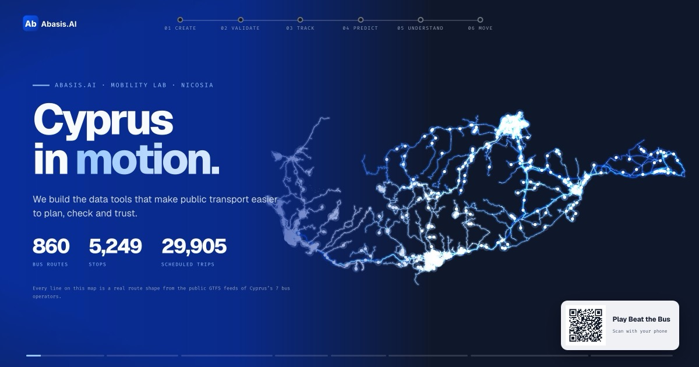

Abasis.AI · Mobility Lab · Nicosia
We build the data tools that make public transport easier to plan, check and trust — from timetable files to live tracking and evidence-based schedules.
One stop · eight Mondays
At the Ministry of Finance stop in Nicosia we compared 1,174 GPS-observed passages with the published times. Since 21 July 2026 we have archived every public bus in Cyprus, every 30 seconds.
How we work
Your turn · 60 seconds
Five real Nicosia buses. Guess when each one actually reached the stop — and see if you can beat the official timetable.
Play nowAt the stand
The looping presentation from our stand: every project in eight minutes, drawn on a live map of the island. Opens full-screen in your browser.
Watch the show ↗
Abasis.AI · Nicosia, Cyprus
Timetable files, validation, phone-based tracking pilots and evidence-based schedules — for operators, cities, schools and tour companies.